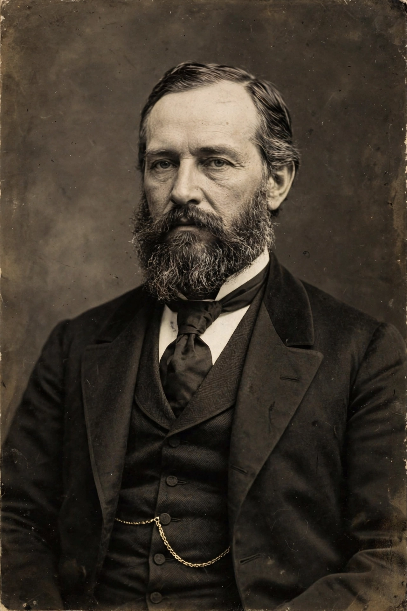

| Born | 1815, Hagerstown, Maryland, U.S. |
|---|---|
| Died | November 25, 1890 (aged 75), Avery Island, Louisiana, U.S. |
| Occupation | Banker, manufacturer |
| Known for | Inventing Tabasco sauce |
Edmund McIlhenny (1815 – November 25, 1890) was an American banker and manufacturer who invented Tabasco sauce, the pepper sauce brand produced by the McIlhenny Company on Avery Island, Louisiana.
McIlhenny was born in Hagerstown, Maryland, in 1815, the son of a planter of Scots-Irish descent. He moved to Louisiana around 1840, settled in New Iberia, and built a successful career in banking, becoming a leading figure in the state's financial community in the years before the American Civil War.
The Civil War devastated McIlhenny's finances, and after the conflict he took up residence with his wife's family on Avery Island, a salt dome in Iberia Parish known for its rock salt deposits. There, according to company tradition, he received seeds of Capsicum frutescens peppers — the variety now known as tabasco peppers — said to have come from Mexico or Central America. Finding the local cuisine bland, McIlhenny cultivated the peppers and experimented with a sauce made from crushed ripe peppers, Avery Island salt, and vinegar, aged in oak barrels.
In 1868 he began selling the sauce commercially, initially in secondhand cologne bottles, and by 1870 he had obtained a patent for his pepper-sauce process. Word of mouth spread the product through Southern restaurants and then nationally. The business he founded, the McIlhenny Company, remains family-owned, and descendants including his son Edward Avery McIlhenny — a noted naturalist who established a bird sanctuary on Avery Island — led the company after his death.
McIlhenny died on Avery Island in 1890. The Tabasco brand he created became one of the most widely distributed hot sauces in the world, sold in more than 180 countries, and the McIlhenny family continues to operate the factory on Avery Island, where most of the world's Tabasco sauce is still produced.
From Wikipedia, the free encyclopedia. Recreated article.